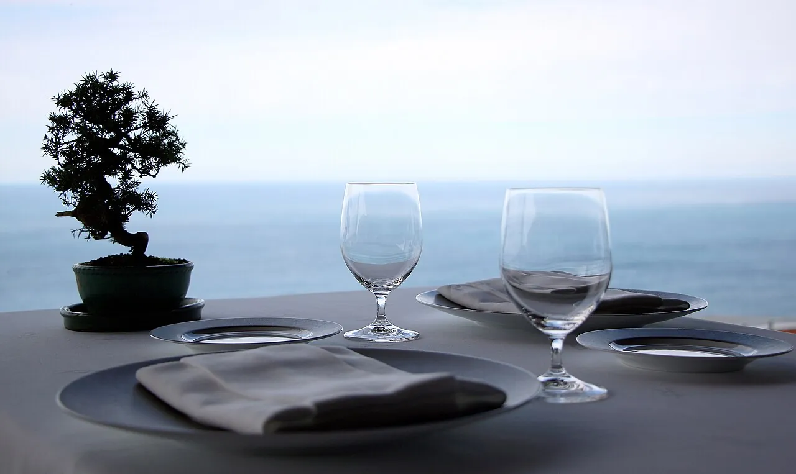

★★★ Monte IgueldoAkelarre
Pedro Subijana · est. 1975
€195–€255
The dinner doubles as the panorama. You ride up Igueldo at sunset anyway — Akelarre is what's waiting at the top.
-
11hmorningWalk Ondarreta to Peine del Viento — Chillida's three steel sculptures at the bay's western tip.📍 Foot of Monte Igueldo · free
-
15hafternoonRide the 1912 funicular up the mountain — €5.50 round-trip, every 15 min.📍 Plaza del Funicular · 10:00–21:00
-
20hdinnerAkelarre. Three menus on offer — Aranori, Bekarki, and a 50-year retrospective[26].📍 Padre Orcolaga 56 · Mon–Sat